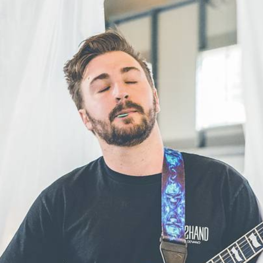

Maxim Lullfitz

My name is Max, I am an Australian with Irish/Swedish heritage, and I live in Brisbane,
Queensland. I play guitar in a metal band and I also like to play the drums.
I started my
career as an electronics technician, where I manufactured and commissioned intercom and
security systems for Gaols and hospitals.
I am currently working in an audio-visual industry
as an installation technician, but I would eventually like to move into commissioning and
programming, which brings me to this course. I have picked up a lot of skills and experience
along the way, and I am lucky to be in Team Exodus with much more experienced IT
professionals.